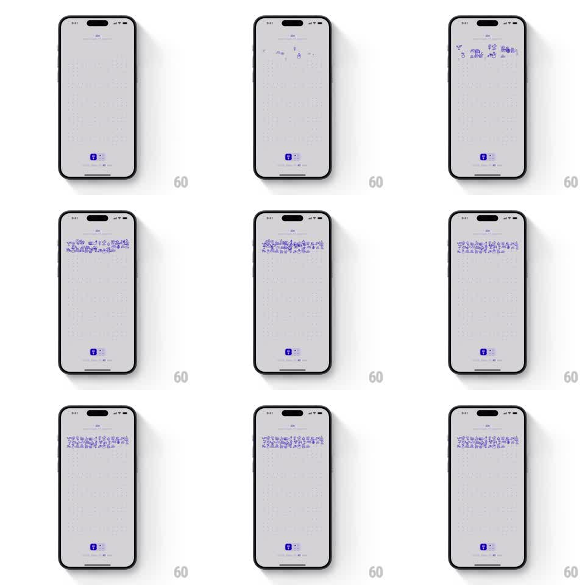

Media
Frame-by-frame

Rebuild this animation 1:1: the One Year app launch - on a light gray dotted-grid canvas, a horizontal band of hand-drawn ink illustrations pops in one by one with springy stagger across the middle of the screen.

Rebuild this animation 1:1: the One Year app launch - on a light gray dotted-grid canvas, a horizontal band of hand-drawn ink illustrations pops in one by one with springy stagger across the middle of the screen. ## Integration Integration: stack-agnostic spec - springs given as stiffness/damping, timed motions as duration + curve; map every value to your framework and animation library of choice. ## Scene Light gray screen with a faint dotted grid texture. A horizontal strip across the vertical center holds ~12 small purple-ink hand-drawn doodles (figures, objects, scenes). A small app mark sits near the bottom. ## Motion spec Pattern: staggered spring pop-in, ~1.5s. - Doodles pop in left to right, 70ms apart: each scales 0 -> 1 with a spring (~380/16) so it overshoots ~10% and settles, fading in over the first 100ms. - Each doodle lands at a tiny fixed rotation (+-3deg) so the band feels hand-placed, not grid-snapped. - After the last doodle lands, the whole band does one gentle collective settle (scale 1 -> 0.98 -> 1, 200ms). - App mark fades in at the bottom during the band's settle (200ms). ## Calibration - Overshoot is uniform across doodles; varying spring constants per item reads as sloppy, not organic. - The dotted grid is texture, not a guide - doodles ignore it. ## Reduced motion Band fades in fully assembled (300ms). ## Don't miss - Left-to-right order is the whole rhythm; random order reads as popcorn, not a parade. - Doodles never overlap; the band breathes as a single composition.